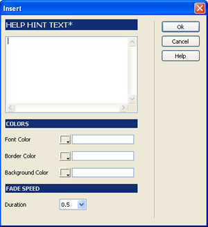

TSHelpHints helps you to build nice help hints over links, form fields and images on your website. The help hints are shown using fade transition effects and can accept HTML formatting.

Access from the 'Dynamic Trio Solutions' bar. In the configuration window (the image above) you paste the text of the hint (accepts HTML). Then, optionally, you can select your own color palete and the speed of the fade transition. That's all, the help hint is ready to show. If you need more detailed configuration, you can edit the css style for the help hint, example, if you want to place your logo as background in the help hint box.